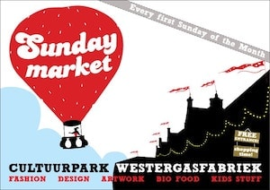

make your
own ring
The box will include everything you need to get started:
- Jeweller’s wax
- Instruction book
- Ring sizer
After having finished your ring, a professional goldsmith will cast your ring in sterling silver, polish it and finish it the way you want it.

This is what some of the finished silver rings look like


How does it work
< swipe >


Get familiar with your slug
Shape your unique ring
Send it in
Receive your polished solid silver product
This project is made possible by Sophia Zobel
I am a jewellery designer born and raised in Amsterdam (NL). After having studied goldsmithing in Schoonhoven (NL) and having done my apprenticeship with Peter Vermandere and Philip Sajet, I continued working as a goldsmith and 3D Designer for several brands in Berlin (DE). After having co-founded the jewellery collective Argyria, I now work and create in the Netherlands, where I also give workshops in wax carving for jewellery.
www.sophiazobel.com
www.argyria.store
Workshops
Are you interested in making silver jewellery and would you like to learn more about the lost wax technique?Are you interested in learning how to carve jeweller’s wax and spend an afternoon, filing, sawing and soldering? A lot is possible in our bilingual workshop. Bringing your own stones and other objects you would like to integrate in your jewellery is possible as well. I give jewellery workshops in small groups and of course you are more than welcome to come and participate! Send me an email or follow the Instagram account and I will keep you updated with upcoming dates.
Next date: 05/09/2020 Amsterdam


Markets
- 20/09/2020 Museum market Amsterdam
- 27/09/2020 Swan market Utrecht
- 04/10/2020 Sunday market Amsterdam
- 11/10/2020 Swan market Den Haag
- 01/11/2020 Sunday market Amsterdam
- 12/12/2020 Swan market Delft
- 13/12/2020 Westergas Christmas market Amsterdam
- [wrong date] Swan Christmas market Rotterdam

- 